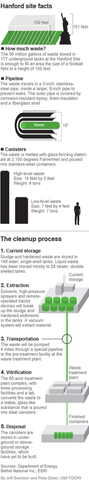

Random tech links
This is an archived post
Previous
Index
Hanford nuclear weapons site faces radiation cleanup challenges
January 18 2012, 8:32 AM
by Alexey Shamrin

via
usatoday.com
Also has a 5 min video.
Tags
science, tech
35 views and 0 responses